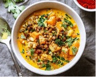
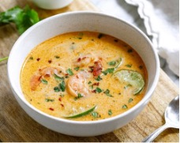
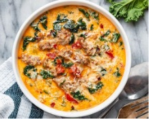

Vegetarian
 Butternut Lentil Stew
Ingredients:
1/2 butternut squash, peeled and diced
3 tablespoons extra virgin olive oil
1 yellow onion, chopped
2 inches fresh ginger, grated
4 cloves garlic, minced or grated
2 teaspoons garam masala
1 teaspoon turmeric
1/2 teaspoon cayenne pepper (adjust to taste)
3 cups water (or vegetable broth)
1/3 cup fresh cilantro, chopped (plus more for serving)
1/2 teaspoon kosher salt and black pepper
1 (14-ounce) can coconut milk
3 cups chopped kale
1 small can cooked lentils.
Baked Zucchini and Cheese
Ingredients:
2 large zucchinis, diced
1 onion, chopped
1 cup grape tomatoes, halved
1 green bell pepper, diced
2 tablespoons olive oil
1 teaspoon garlic powder
1 teaspoon Italian seasoning
1/2 teaspoon salt
1 teaspoon fresh cracked black pepper
1 cup grated mozzarella cheese
1 tablespoon parsley, for garnish
1/2 teaspoon crushed chili pepper flakes, for garnish
Gluten-free

Thai Shrimp Soup
Ingredients:
1 tablespoon vegetable oil
2 tablespoons grated fresh ginger
2 teaspoons red curry paste
1 stalk lemongrass, minced (optional)
4 cups vegetable broth or seafood stock
3 tablespoons fish sauce
3 (13 oz) cans of coconut milk
½ pound shrimp, shelled
2 tablespoons fresh lime juice
¼ cup chopped fresh cilantro
Crushed chili pepper flakes, for garnish
Garlic Lemon Chicken Thighs
Ingredients:
2 pounds boneless, skinless chicken thighs
½ cup chopped fresh cilantro
5 tablespoons olive oil, divided
4 tablespoons freshly squeezed lemon juice
1 tablespoon lemon zest
2 tablespoons minced garlic
4 teaspoons chili powder
2 teaspoons chili pepper flakes
2 teaspoons ground cumin
2 teaspoons kosher salt
2 teaspoons freshly ground black pepper
2 teaspoons instant chicken bouillon
Keto

Keto Tuscan Soup
Ingredients:
1 lb (450g) Hot Italian sausage, casings removed (or turkey sausage)
1 large onion, chopped
3 cloves garlic, minced
1 teaspoon dried oregano
½ cup sun-dried tomatoes, drained and chopped
Salt and freshly ground black pepper
6 cups low-sodium chicken broth
1 bunch kale, leaves stripped and chopped
¾ cup heavy whipping cream
¼ cup freshly grated Parmesan, for serving
Fresh chopped parsley, for serving
Crushed chili pepper flakes, for garnish
Garlic Butter Chicken Meatballs with Cauliflower Rice
Ingredients:
1 lb (450g) ground chicken (or turkey)
½ cup shredded cheese (mozzarella, cheddar, provolone)
4 cloves garlic, grated + 2 cloves garlic, minced
1 teaspoon Italian seasoning
½ teaspoon crushed red chili pepper flakes (optional)
1 crumbled bouillon cube (optional)
½ cup chicken stock
Salt and fresh cracked black pepper, to taste
½ cup fresh chopped parsley (or cilantro)
3 tablespoons butter, divided
Juice of ½ lemon
1 tablespoon hot sauce of your choice (we used Sriracha)
1 medium cauliflower head, grated (or a packet of riced cauliflower)
Pescatarian
Blackened Shrimp and Asparagus Skillet
Ingredients:
1 lb (450g) large shrimp, peeled and deveined
1 teaspoon onion powder
1 teaspoon onion powder
1 teaspoon onion powder
2 teaspoons paprika
1 teaspoon onion powder
1 teaspoon cumin
1/2 teaspoon garlic powder
1 teaspoon salt
1/4 teaspoon freshly cracked black pepper
2 tablespoons olive oil, divided
1.5 pounds (700g) asparagus, rinsed and trimmed
1/4 cup vegetable stock
1 tablespoon hot sauce (optional)
1 tablespoon lemon juice
Garnish: lemon slices, chili flakes, fresh parsley
Teriyaki Salmon Bowl
Ingredients:
1 lb (450g) salmon filets, cut into chunks
1 cup (180g) rice (we used sushi rice)
3 tablespoons rice vinegar
½ teaspoon salt
1 tablespoon honey
1 teaspoon brown sugar
2 tablespoons gluten-free tamari (or soy sauce, or Nuoc Mam)
1 teaspoon sesame oil
½ teaspoon grated garlic
½ teaspoon grated ginger
1 tablespoon Sriracha (optional)
4 scallions, chopped
2 tablespoons sesame seeds
5 oz (150g) edamame beans
1 avocado, sliced
Crushed chili pepper flakes, for garnish